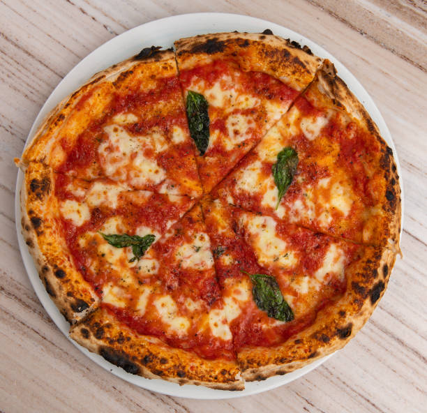

La salsa pesto tiene sus orígenes en Génova, la capital de Liguria, en el noroeste de Italia.
La palabra "pesto" proviene del verbo italiano "pestare," que significa machacar o triturar.
Originalmente, el pesto se hacía a mano utilizando un mortero de mármol y un mazo de madera.
Curiosidades
El pesto tradicional se hace con piñones, pero a veces se sustituyen por nueces debido a su alto costo.
En Liguria, es común añadir papas y judías verdes a la pasta al pesto para hacerlo un plato más completo.
El 17 de marzo se celebra el Día Nacional del Pesto en Italia.
Ensalada César
Historia
La ensalada César fue creada por el chef italiano César Cardini en 1924. Cardini, que vivía en San Diego pero operaba un restaurante en Tijuana, México, inventó la ensalada un día de mucho trabajo cuando los suministros en su cocina eran limitados.
La ensalada original no incluía anchoas; el sabor a anchoa provenía de la salsa Worcestershire.
Curiosidades
La ensalada César se popularizó en Estados Unidos durante la década de 1940 y 1950.
Existen muchas variantes de la ensalada, algunas incluyen pollo, camarones o incluso tofu.
En 1953, la ensalada César fue reconocida por la Sociedad Epicúrea de París como "la mejor receta que surgió de las Américas en 50 años."
Pizza Margherita

Historia
La pizza Margherita fue creada en 1889 por el pizzero Raffaele Esposito en Nápoles, Italia, en honor a la reina Margherita de Saboya.
La pizza fue diseñada para representar los colores de la bandera italiana: rojo (salsa de tomate), blanco (mozzarella) y verde (albahaca).
Curiosidades
Según la leyenda, la reina Margherita quedó tan encantada con la pizza que Raffaele Esposito le escribió una carta de agradecimiento, que aún se conserva en Nápoles.
La pizza Margherita es considerada la pizza más básica y esencial en Italia, y muchos la consideran la "prueba de fuego" para evaluar la habilidad de un pizzero.
En Nápoles, la pizza Margherita es una denominación de origen protegida (DOP) y debe cumplir con estrictas normas de preparación para llevar ese nombre oficialmente.